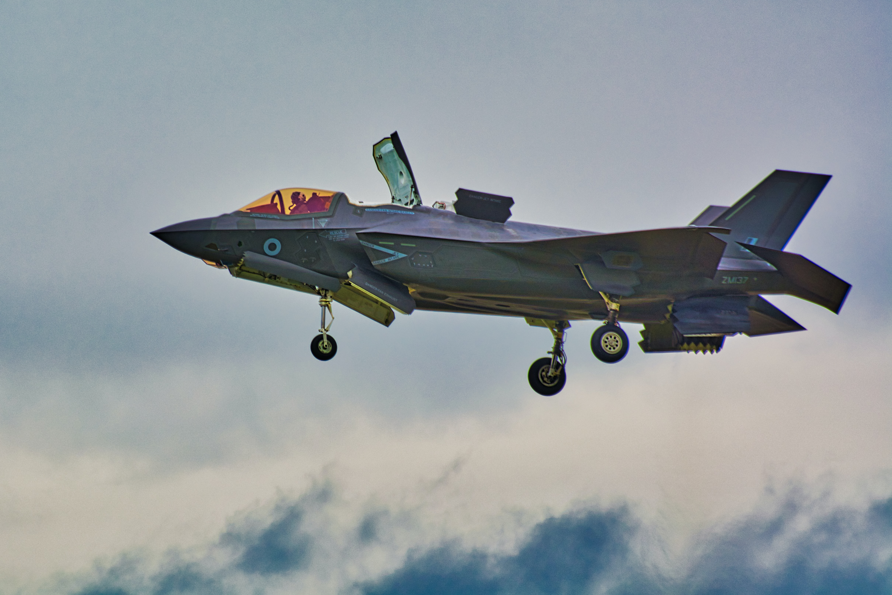
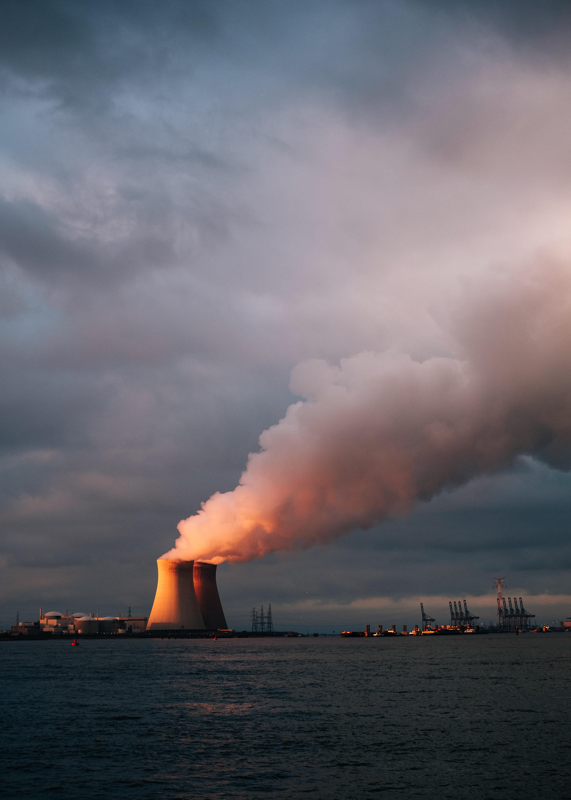
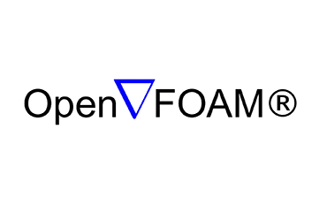
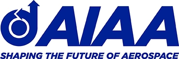
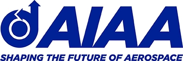
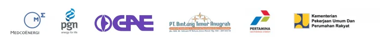

I N F I M E C H
Jasa Simulasi CFD
Anda Memerlukan Tenaga Ahli Dalam Menangani Proyek Atau Penelitian Anda?
Kami dapat melayani jasa simulasi aliran fluida dan perpindahan panas dengan menggunakan metode simulasi CFD(Computational Fluid Dynamics). CFD dapat menjadi solusi bagi permasalahan Anda. Dengan memanfaatkan metode numerik dan didukung dengan model komputasi, Simulasi CFD mampu menyelesaikan permasalahan desain Anda.
Infimech memberikan solusi jasa simulasi CFD dan pengolahan datanya. Kami telah menangani berbagai macam proyek penelitian dengan latar belakang akademik dan industri. Hasil simulasi CFD dapat berupa data kuantitatif, grafik, gambar dan video animasi beserta pembahasan, kesimpulan dan saran dari penelitian atau desain yang dilakukan. Sehingga, dengan CFD, user dapat menyelesaikan permasalahan engineering dengan cepat, tepat dan hemat.
Jasa Simulasi CFD Meliputi :

Industri Maritim
Pemodelan pada skema hull body kapal
Industri Bangunan
Analisis aliran udara pada tata letak kota

Industri Dirgantara
Simulasi model aliran fluida pada pesawat F-16
Industri Lingkungan
Pemodelan pipa buangan limbah B3

Industri Energi
Model simulasi pola aliran pada fluidized bed
Industri Kimia
Analisis Pemodelan pencapuran lemak
Layanan Jasa Simulasi CFD

Analisis dan Pengolahan
Untuk memproses data mentah dari hasil simulasi CFD dan FEA, diperlukan pengolahan data, costumer bisa menggunakan jasa olah data untuk mendapatkan hasil simulasi sesuai dengan output yang diinginkan.
SelengkapnyaAnalisis dan Pengolahan
Untuk memproses data mentah dari hasil simulasi CFD dan FEA, diperlukan pengolahan data, costumer bisa menggunakan jasa olah data untuk mendapatkan hasil simulasi sesuai dengan output yang diinginkan.
SelengkapnyaSet Up
Pemilihan set up untuk simulasi. Set up simulasi CFD dan FEA dipilih berdasarkan kebutuhan costumer, dapat memilih untuk transient atau steady, serta jenis aliran turbulent atau laminar.
Selengkapnya
Set Up
Pemilihan set up untuk simulasi. Set up simulasi CFD dan FEA dipilih berdasarkan kebutuhan costumer, dapat memilih untuk transient atau steady, serta jenis aliran turbulent atau laminar.
Selengkapnya
Validasi dan Verifikasi
Client dapat menggunakan model validasi dan verifikasi berupa Grid Independency Test, Analisis Konservasi Massa, Momentum dan Energy dam Stabilitas DAta, serta dapat juga validasi dengan refrensi lain.
Selengkapnya
Validasi dan Verifikasi
Client dapat menggunakan model validasi dan verifikasi berupa Grid Independency Test, Analisis Konservasi Massa, Momentum dan Energy dam Stabilitas DAta, serta dapat juga validasi dengan refrensi lain.
Selengkapnya
In Association With

Standardized by
 

Dipercaya Oleh 100+ Klien Dari Beragam Bidang Industri & Akademik
